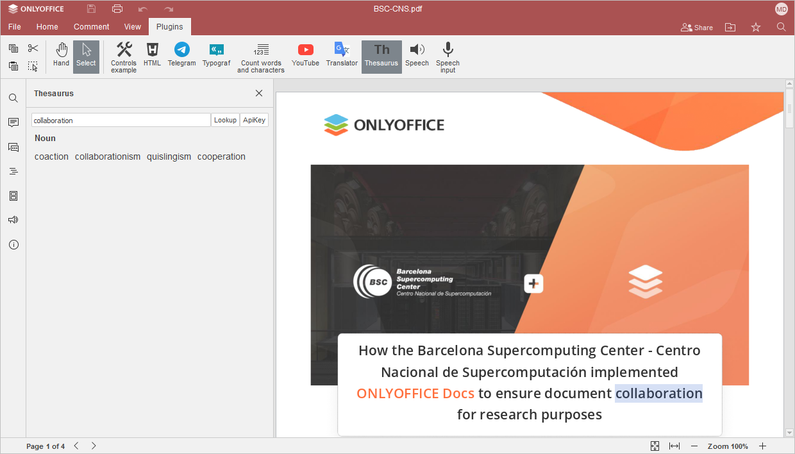

Pronađi sinonim
Ako koristite istu reč više puta ili vam reč jednostavno nije ona prava koju tražite, ONLYOFFICE PDF Editor vam omogućava da pronađete sinonime. Prikazaće vam i antonime takođe.
Počevši od ONLYOFFICE Docs verzije 8.2, nijedan plugin ne dolazi podrazumevano uz editore. Plugin-ovi se instaliraju putem Plugin Manager.
- Izaberite reč u dokumentu.
- Prebacite se na Plugins karticu i izaberite Thesaurus.
- Sinonimi i antonimi će se prikazati u levoj bočnoj traci.
